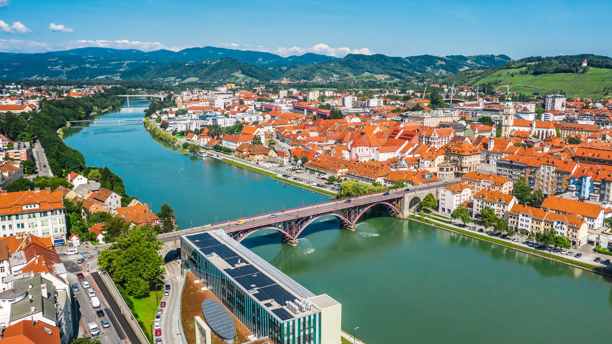
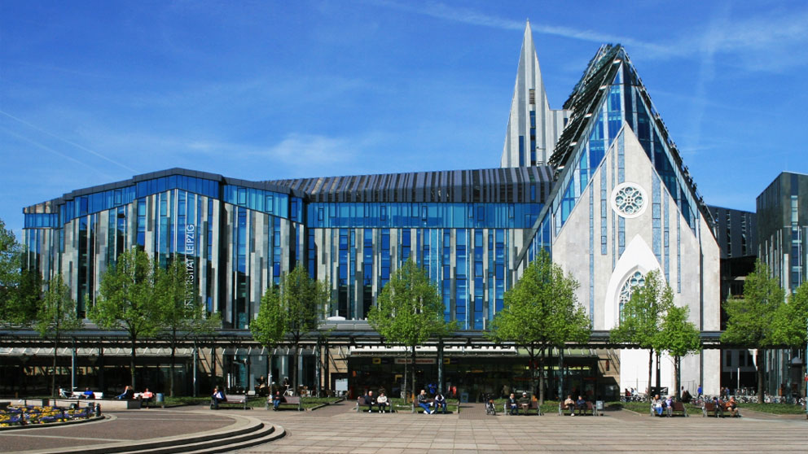
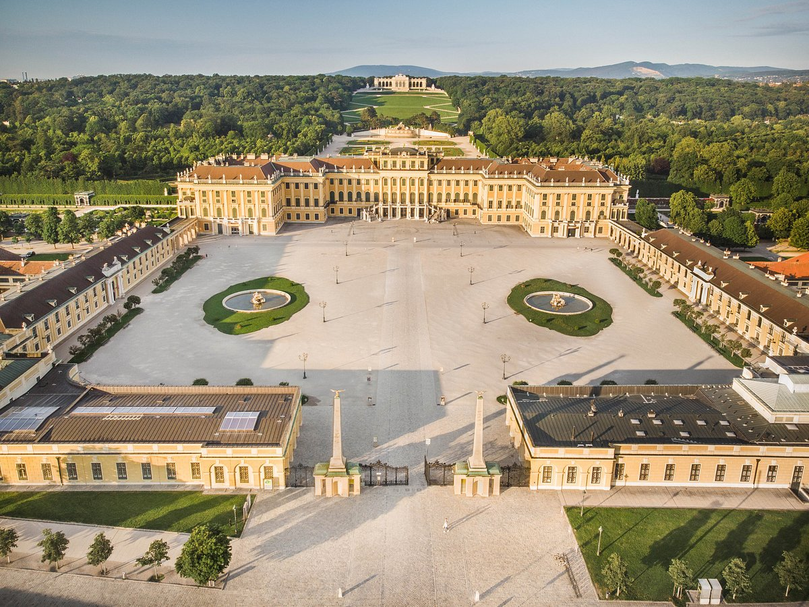
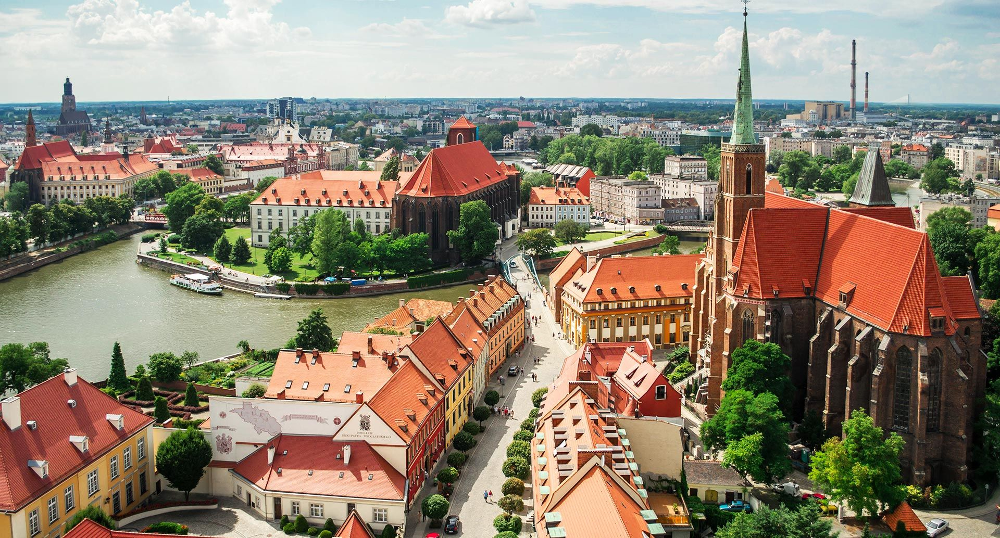
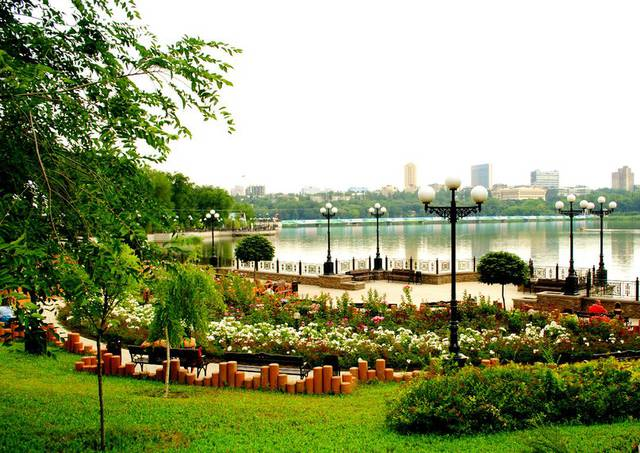

A little about my...let's call it nomadism or migration. I was born and lived in Ukraine until the age of 18. First 16 years in the city of Donetsk and then in the capital - Kyiv. When I was 17 my family left for Poland, and 1.5 years later I followed them. In the city of Wroclaw, I studied German language and went on exchange studies to Vienna and Leipzig. In Leipzig I met my future husband and the following year I moved to live with him in Slovenia. Since 2020 I have been living in the city of Maribor with my husband and our daughter.
Maribor
Leipzig
Kyiv
Vienna
Wroclaw
Donetsk